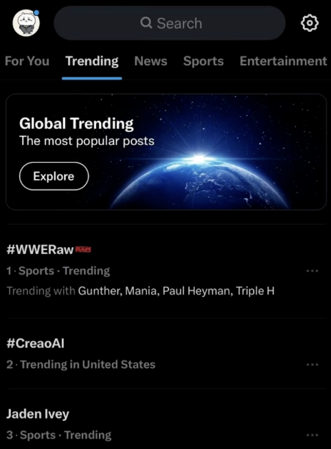
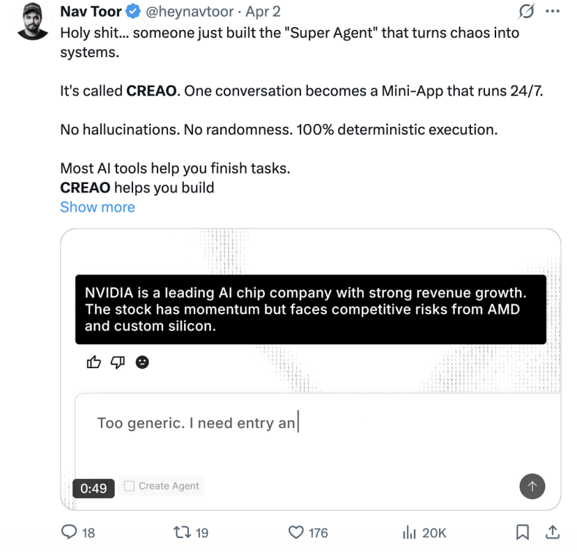
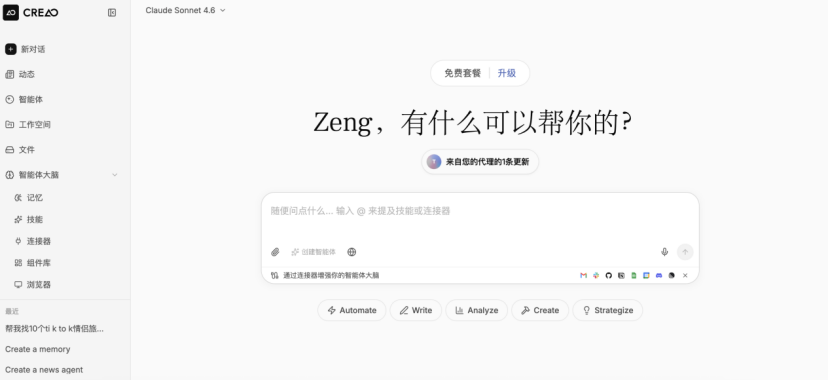
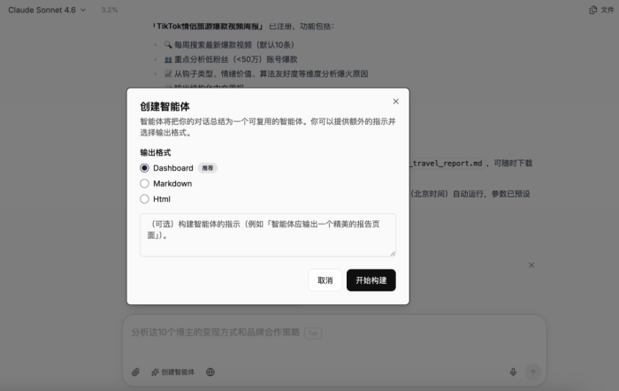
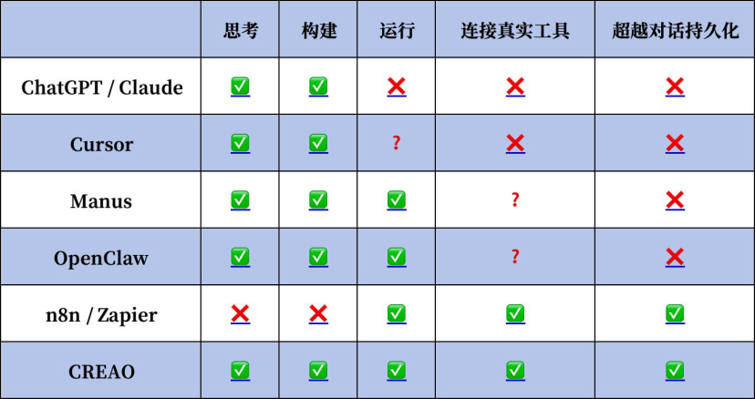

衡宇 发自 凹非寺
量子位 | 公众号 QbitAI
今早，Anthropic发布了最新Agent架构Managed Agents。
一并公布的技术文档中反复强调“Agent Harness”这个关键概念，其核心是：
每个Agent请求都应该跑在独立的沙盒环境里。
顺着这条思路深挖，我们发现，已经有一个产品因同样的架构设计冲上了热搜Top 3。
这款产品叫CREAO，由一支硅谷华人团队打造。

在正式了解CREAO之前，我们先来浅聊两句AI Agent Harness。
Harness绝对是近期大模型世界里最热的词（也被戏称为继token后又一难翻译成中文的AI名词）。
它指代的是让AI能持续可靠地大规模长期工作的外围控制系统，包括提示词构建、工具调用、状态管理、安全检查和循环控制等等。
由于AI技术日益进化，AI产品强调从“Chatbot”转变向“可靠的Agent”，Harness的重要性也日益提升。
而随着AI从专业开发者走向普通大众，是时候出现一款消费级的AI Agent Harness了。
CREAO应运而生。
甫一上线，CREAO就用评论区五花八门的买家秀展示了自己是如何面向普通用户大展拳脚的。
有人用它搭了一套全自动竞品监控，每周一定时抓取价格，自动发到工作群；有人把图像生成、配音、转录、剪辑一整条内容流水线交给它，设置好之后，就再也没有手动操作过……
凭借从配置到使用0门槛、高稳定性等独特能力，CREAO的热度一路从北美蔓延到欧洲、东南亚、拉美，并迅速引发全球数十位科技KOL的注意。
大家隔着网线，来了场浩浩荡荡的跨语种深度评测。

量子位获悉，CREAO背后是一支位于硅谷的中美复合型团队。
他们秉承着一个朴素的核心判断：让普通人只用花费说句话的力气，就能搭建一个属于自己的、永不停歇的Agent。
CREAO，如何定义“消费级”？
尽管以OpenClaw为代表的各种龙虾们掀起了一阵Agent狂热，但总体来看，AI行业仍处于一个微妙的矛盾期——对于普通用户来说，想要用上Agent的除了对话外的那些“高级功能”，门槛还是太高了。
作为“全球第一个真正面向普通用户的AI Agent Harness”，CREAO率先就把部署门槛和使用门槛统统甩到一边。
用户站在目前大多数Agent面前时，总是望着两座大山发怵。
一是环境部署。
你最好得懂一点Python，明白怎么配置API Key，麻烦点的还得辛苦你折腾折腾服务器。
二是逻辑构建。
你需要具备极其严密的编程思维，才能防止AI在执行过程中跑偏（不然跑偏了你也救不回来，只能看着你的虾虾们被养死了）。
这导致很多强大的Agent只服务于极客，普通人呢，只能在门外望洋兴叹。
而使用CREAO，只需要打开官网就可以了。
不需要部署什么，也不需要任何配置，打开就能使用。

讲真，哪怕是再简化过后的GUI操作流程，社区里提供再详细的安装教程，对普通人来说也是一道关卡。
相信我，人类的底层代码里一定写着“能少做一步算一步”这几个字。不然也不会有那么多上门安装龙虾和卸载龙虾的需求诞生了……
跳过部署和配置环境环节，使用层面也没得说，和现在所有最前沿的Agent一样，只要人话——哪怕是逻辑不那么通顺、指向模糊的话——CREAO也能很好地分析且开始执行任务。
别慌，CREAO还有别的不一样的特色在身上！
无论是OpenClaw还是Manus，这些Agent本质还是AI在执行任务，所以跑起来可能出现各种bug。
跑着跑着，按捺不住AI存在的幻觉，开始叽里咕噜胡说八道。
而且你还得像供祖宗一样供着它（bushi）。
它们必须保持聊天窗口打开、设备保持在线，一旦关闭页面/锁屏/退出软件/关掉主机，正在运行的任务会直接终止，之前的所有设置与进度全部作废。
好在这两个问题都被CREAO巧妙地解决了～
具体来说，CREAO走了三步来破局。
第一步，CREAO理解用户说人话下达的需求，实时编写对应的执行代码。
这一过程中，系统会自动帮你连上Gmail、表格、飞书、Slack等300多个常用软件，用户点开就能用，无需额外设置。
第二步则是CREAO最核心、最不一样的地方。
按照指令，CREAO的AI系统帮你把流程搭好，并且成功跑通后，你如果对最终效果满意，可以点击“创建智能体”按钮，把这一套完整的工作流程“固化”成一个能永久使用的Agent。

这可能是CREAO上最能体现“Harness”的一点，用户能在使用过程中按需驯化符合心意的Agent。
为了让此后的每一次任务都精准无误，CREAO又做了第三步：固化后的Agent就成了你CREAO账号上专属的软件基础设施，支持定时调度、重复运行，还能实现技能复用。
它不再依赖LLM的实时推理，也就告别了幻觉问题。所以以后每次用该Agent执行任务，结果的准确率都是100%。
简直可以称之为“一次性配置，终身服役，保证完成任务”。
对咱们普通人来说，省事，不用反复折腾，帮咱干活的时候准确率高，这不比什么都强？？
一个表格，六款产品，CREAO独揽全绿
看到这里，不少人会产生疑问，这不就是另一个OpenClaw吗？
似也，但非也。
表面看有点像，但本质完全不同。
深入对比后会发现，作为全球第一个真正面向普通用户的AI Agent Harness，CREAO拥有两项独家能力，拉开了与其它AI产品的差距。
一是AI从循环中自我构建，由LLM调度、100%确定性执行； 二是任意API一次描述，永久变成可复用Skill，形成复利式能力积累。
这份差距在多产品的横向维度对比中，会体现得更为直观和清晰。

与ChatGPT和Claude Code相比，CREAO实现了从“文本输出”到“落地运行”的跨越，把AI的能力真正送到了用户的工作流里。
与OpenClaw和Manus相比，CREAO是长期可用的生产工具，稳定性尤为突出。
与成熟的自动化工具n8n和Zapier相比，CREAO以AI驱动自动化，普通用户无需专业知识，用自然语言就能完成所有操作，门槛大幅降低。
在思考、构建、运行、连接真实工具、超越对话持久化这五个核心维度上，唯有CREAO在五个维度上全部实现，成为六款产品中唯一全能型选手。
还有一个表格外的独特能力一定要跟大家讲，那就是你在CREAO上固化的所有Agent，都在云端服务器上创建了影分身。
你交代完任务，大可以放心地关掉网页窗口，甚至直接合上电脑去干别的事！
不管你的终端设备是否在线，驯化好的Agent都会按照既定的时间表雷打不动地执行任务。
以上，都印证了CREAO作为AI Agent消费级入口的独特价值。
背后是一支什么样的团队？
能做出这种极具产品感的产品，背后必然站着一群对用户体验有极端追求的人。
CREAO总部位于美国硅谷，是一支典型且硬核的中美复合型团队。
据我们了解，团队汇聚了来自Google、Meta等硅谷一线大厂的华人AI精英，同时也融合了国内头部大模型创业公司和明星互联网企业的技术骨干。
这种背景让他们既拥有全球化的视野和前沿的自研架构能力，又深谙C端产品的交互逻辑。
从底层架构、执行引擎到集成协议，这支团队的产品核心技术全自研——这也是CREAO能实现稳定运行、无限集成的核心底气。
全栈自研让CREAO摆脱了对第三方框架的依赖，能灵活适配各类工具与API，同时保障任务执行的稳定性与安全性，成为CREAO能实现“The conversation ends. What you built doesn’t.”的技术基础。
在产品研发过程中，团队始终坚守对C端用户体验的极致执念，没有盲目追逐模型能力、框架复杂度等技术指标，而是聚焦普通用户的真实需求，耗时数月攻克了业界一直回避的难题：
怎么才能在对话结束后，让AI依旧持续稳定地执行任务并输出？
这个问题背后涉及代码生成的确定性、多工具编排的稳定性、以及用户心智模型的重新设计，都十分棘手。
这种死磕底层逻辑的坚持，让CREAO从一众Agent里跳了出来走进大众视野。目前，产品已覆盖北美、欧洲、拉美、东南亚等多个核心市场。
这种精神也成了它叩开资本大门的敲门砖。
据悉，在CREAO正式发布前的一年内，CREAO已完成连续多轮数千万级美金融资。
CREAO的成功其实向行业释放了一个强烈的信号：AI Agent赛道正在经历从“技术驱动”到“体验驱动”的范式转换。
过去两年，业界一直在卷模型参数、卷Agent框架，但真正能跑出来的消费级产品少之又少。
能够占领C端市场的AI Agent产品，一定和“普通人无痛上手”“稳定可靠”“高度个性化”密切相关。
CREAO的成功就证明了这一点。
消费级AI产品的终极竞争力，还是在于降低使用门槛，让普通人能轻松构建、驯化属于自己的自动化系统。AI Agent一旦正式从开发者圈层走向大众用户，整个赛道都将迎来全新发展阶段。
这不由得让人联想到20年前，iPhone重新定义智能手机的范式转换时刻。
2007年，iPhone在一众卷生卷死的手机品牌中，因让普通人第一次直观、轻松地使用智能手机，重新定义了移动终端的使用范式，名声大噪。
如今，CREAO这支中美复合型团队正在AI Agent赛道做着同样的事，把AI Agent驯化成每个普通人无痛上手、不可或缺的执行系统。
一键三连「点赞」「转发」「小心心」
欢迎在评论区留下你的想法！
— 完 —
🌟 点亮星标 🌟